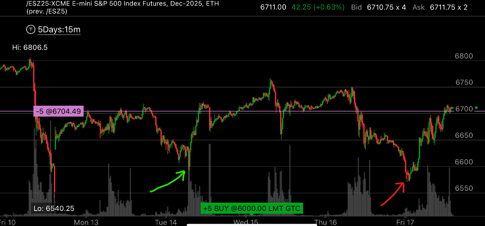
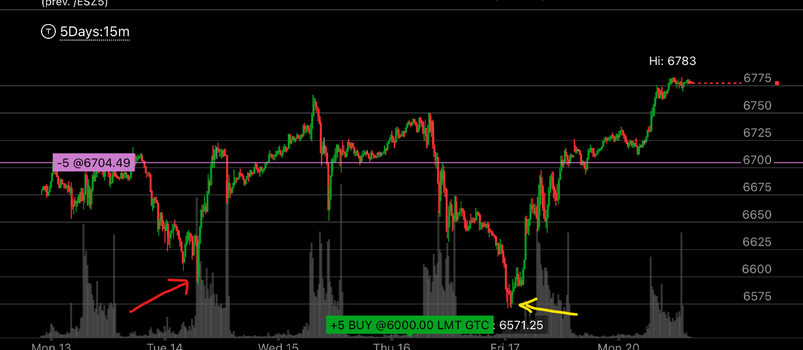
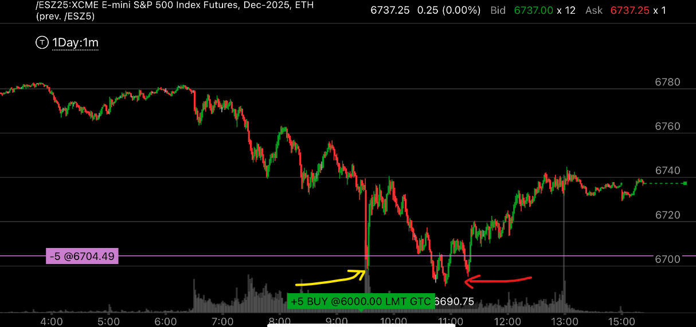

非加速状态下的完成走势
- 如果更大的走势不是加速状态，只是以为超买或者缓慢的五浪走势下跌，那么它如果走出了非加速状态的完成走势，也是可以算完成的。
- 关键在于更大的走势是什么样子，如果更大的走势没加速，那么非加速的完成就足够反转了。 不然，就必须是加速状态


图示:
- 两个图是同一个走势的时间移动。
- 箭头所指的地方，是一个完成走势。但是看它的时间，它没有实现向下加速。
- 第二个箭头所示，它只比前面稍微低很少，而且时间也只稍微持续很短的时间，就可以完成反转。
- 这是因为更大的走势处于升势，它没有真正的反转。所以这里只需要一个非加速的完成走势就可以反转
- 这个走势相隔了两天，但是仍然遥相呼应，它在第一个低点反弹很高，接近了前面的高点，这个本身已经说明了。它会反弹，创新高。
看第一张图，它的高点是6806， 而第一个高点已经到了6865. 可见第二个高点必然到了6880附近，这个点已经几乎碰到了6806，说明大盘不在乎这个高点
也就是说，它会被破掉。大盘从暴跌200多点，一直反弹到了几乎和原来高点平齐，本身已经说明了，大盘会继续创新高。 但是它仍然给人机会跑掉，这个机会
就是第二个低点的完成走势。

图示:
- 这个是一个日间的图，一分钟间隔。同样的走势，也可以发生在同一天的小型走势
- 黄色箭头创新低后，立刻反弹，这个本身就值得警惕，说明大盘会反弹了。
- 红色箭头则是非加速的完成走势，可以看到，它是缓慢的新低。但是因为更大的走势是没有加速的。所以，它也不需要加速就完成了走势